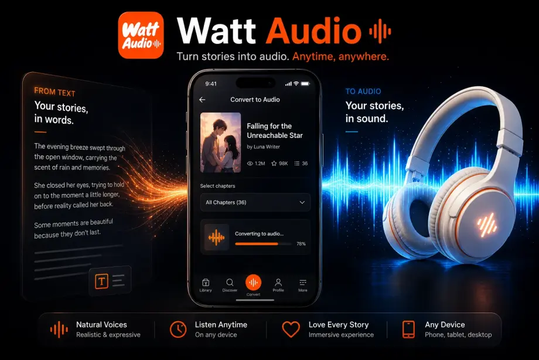

Nhật Ký Làm Cá Mặn Chốn Hậu Cung: Audio Story Listening Guide
A listening guide for readers searching Nhật Ký Làm Cá Mặn Chốn Hậu Cung audio, similar palace drama, salted fish heroine, survival, and historical comedy stories, and Watt Audio workflows. This guide is written for readers who searched for Nhật Ký Làm Cá Mặn Chốn Hậu Cung, Vietnamese audio stories, YouTube story audio, or similar palace drama, salted fish heroine, survival, and historical comedy fiction.

If you are searching for listening to Nhật Ký Làm Cá Mặn Chốn Hậu Cung and similar palace drama, salted fish heroine, survival, and historical comedy stories, you probably want something more comfortable than staring at a screen for every chapter. Web fiction is easy to discover but not always easy to read in daily life. Chapters arrive at odd times, stories can become very long, and the best reading moments often happen when your hands or eyes are already busy.
Watt Audio is designed around that exact problem. Instead of treating a story page like a normal web article, it helps you bring a supported story link into a listening library, create chapter audio, and continue the story with controls that feel closer to an audiobook player. The goal is not to replace the original story source or the author. The goal is to make personal reading more flexible when you want to listen.
Why readers use audio for web stories
Reading on a phone is convenient, but it can also become tiring. Bright screens, small text, long scrolling sessions, and constant notifications can make even a favorite story feel harder to finish. Audio gives you another mode. You can continue a chapter during catching up on palace drama, salted fish heroine, survival, and historical comedy chapters, long Vietnamese story audio, similar YouTube audio story searches, and personal listening sessions, then return to normal reading whenever you want full visual focus.
The best audio workflow is chapter-based. A generic text reader may speak everything on a web page, including navigation, comments, buttons, and unrelated page elements. A story-focused app should keep attention on the chapter, remember where you are, and give you a clear way to move forward without rebuilding your queue every time.
Step-by-step setup
The simplest way to start is to treat the first chapter as a test. Do not worry about converting an entire library on day one. Add one story, generate one chapter, and check whether the voice, speed, and controls fit the way you like to read.
- Search for Nhật Ký Làm Cá Mặn Chốn Hậu Cung on the original channel, story site, or source you already use.
- Copy a supported story or chapter link into Watt Audio to keep listening progress organized.
- Generate one chapter first, then adjust speed, sleep timer, and background playback for personal listening.
Once this first flow feels natural, you can use it for longer sessions. Some readers prepare a few chapters before a commute. Others generate only the newest update from a favorite story. The most useful habit is to keep audio preparation close to your real routine, not to create a huge queue that you never finish.
How to get better listening results
Text to speech works best when you give yourself permission to adjust the experience. Fiction is not one uniform format. A quiet romance confession, a fantasy battle, a recap chapter, and a casual author's note all have different rhythms. The same playback speed will not always feel right.
- Use this page as a discovery guide for Nhật Ký Làm Cá Mặn Chốn Hậu Cung and similar palace drama, salted fish heroine, survival, and historical comedy stories, not as a repost of the story itself.
- For long Vietnamese audio stories, prepare only a few chapters at a time so the listening queue stays clean.
If you care about immersion, listen for a few minutes before deciding whether a chapter is a good fit for audio. Some chapters are perfect for hands-free listening because they are linear and dialogue-driven. Others include lists, unusual formatting, or heavy world-building that may be easier to read visually. A flexible reader uses both modes.
When Watt Audio is most useful
Watt Audio is most helpful when the story is already part of your routine. If you follow many serialized stories, you know how easy it is to fall behind. Audio turns small gaps in the day into reading time: a walk, a bus ride, a cleaning session, or a quiet moment before sleep. Those small sessions add up quickly.
It is also useful for rereads. When you already know the plot, listening can bring back the atmosphere without requiring the same level of visual attention. You can revisit favorite chapters, catch up before a new update, or move through slower sections while saving your focused reading energy for the scenes you care about most.
Frequently asked questions
Does Watt Audio host Nhật Ký Làm Cá Mặn Chốn Hậu Cung?
No. Watt Audio is a personal listening workflow for supported story links. This guide helps readers organize listening, not download or redistribute story content.
Why target the exact story title?
Readers often search by story name after seeing a YouTube audio episode, then look for a more comfortable way to continue listening.
Download Watt Audio
Turn supported story links into chapter audio, listen with the screen off, adjust playback speed, and keep your reading habit moving when life is busy.